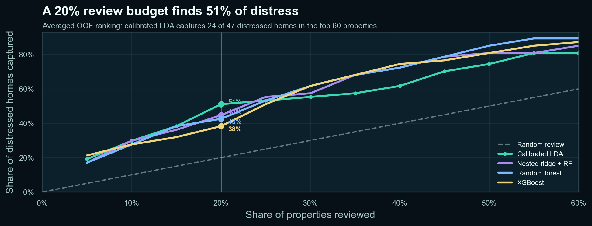

Understand
the exposure.
Financial instruments, liquidity, ALM, scenarios, and reporting. Translate complex exposures into clear limits, questions, and priorities.
Risk analytics & validationFinancial risk · Automation · Data science
I connect financial-risk expertise, statistical thinking, and thoughtful automation to build systems that turn analysis into clear decisions.
What I do
From the first data check to the final recommendation, I focus on how the whole workflow holds together.
Financial instruments, liquidity, ALM, scenarios, and reporting. Translate complex exposures into clear limits, questions, and priorities.
Risk analytics & validationConnect data checks, Python workflows, logs, and reporting. Make the process easier to run, inspect, troubleshoot, and hand over.
Automation & controlsApply statistical learning, compare models, and evaluate uncertainty. Build forecasts and risk rankings around the decision they support.
Data science & researchSelected work
Interactive systems and analytical studies across finance, support operations, healthcare, energy, and housing.
Versioned daily runs, traceable results, and an exception-first dashboard. Explore liquidity scenarios, inspect individual instruments, and follow each result back to its source.
Versioned daily triage runs, explainable routing decisions, and an exception-first dashboard. Explore staffing scenarios, trace a ticket's routing rationale, and follow each result back to its source.
Observed test sensitivity
A brain-MRI screening study comparing model paths and operating thresholds, with attention to missed cases and the trade-offs behind a decision.
Explore the study ↗Two linked models translate weather and calendar patterns into expected electricity use and high-demand alert probability.
Explore the study ↗
Estimate a home’s price and rank its distressed-sale probability. The top-20% review queue captured 24 of 47 known distressed cases.
Explore the study ↗THE WAY I THINK
A bit about me
I’m a risk and data analytics professional with 5+ years of experience supporting financial-risk workflows. My background in economics and statistics shapes how I approach both practical problems and new ideas.
I work across technical detail and stakeholder communication—reviewing scripts, validating results, investigating issues, and making analytical work easier for other people to use.
I’m also pursuing an MA in Statistics and Data Science, extending that foundation into machine learning, deep learning, and applied research.
Stack & toolsRead my full profile ↗Experience
Financial analytics, cross-functional delivery, and client-facing experience.
Hedge-Tech · Fin-Tech & Risk Management
Risk-analysis workflows, instrument modelling, validation, reporting, and coordination with financial institutions.
GTP Solutions
Project coordination, team workflows, commercial activity, and stakeholder relationships.
DMD Online
Client communication, needs identification, service, and structured follow-up.
Get in touch